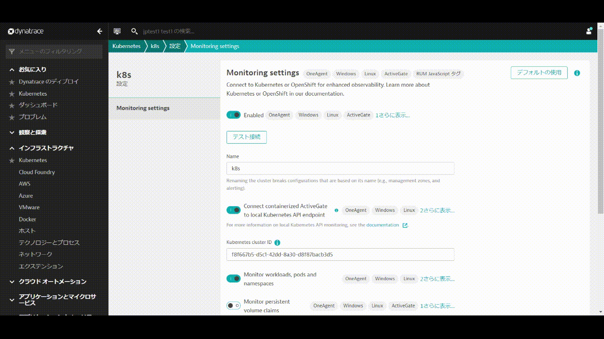
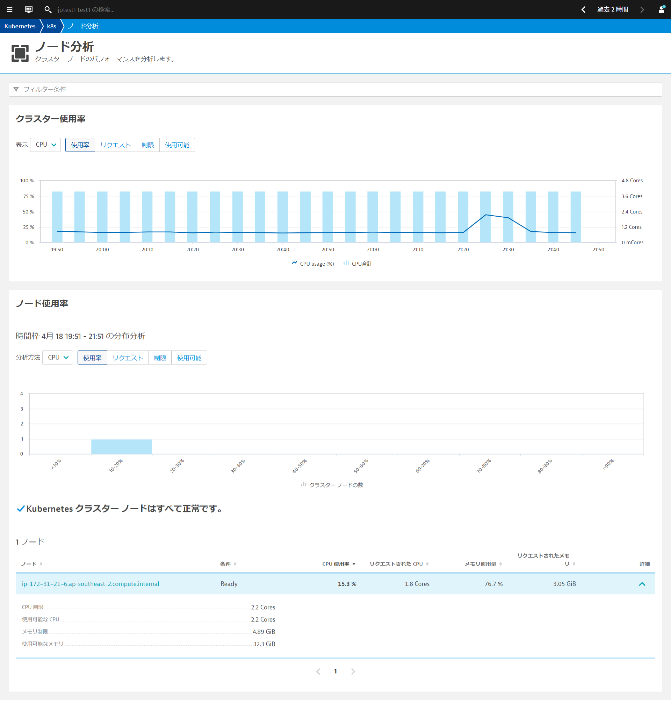
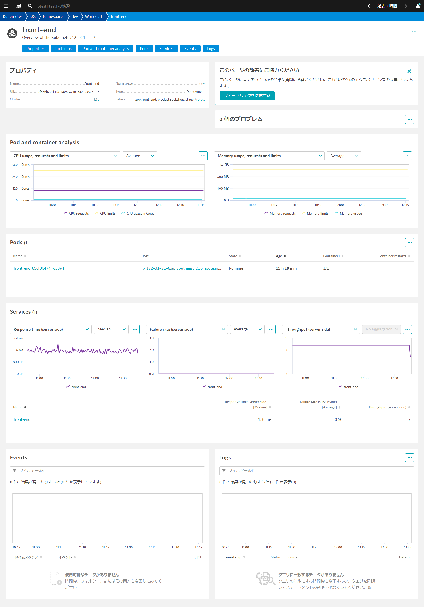
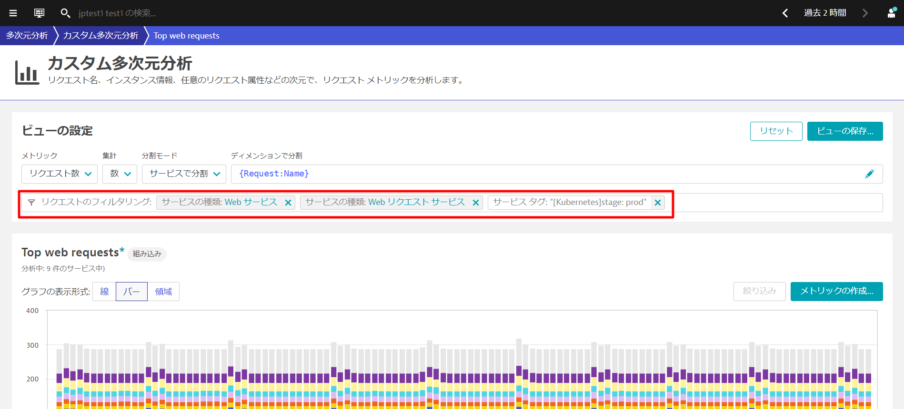
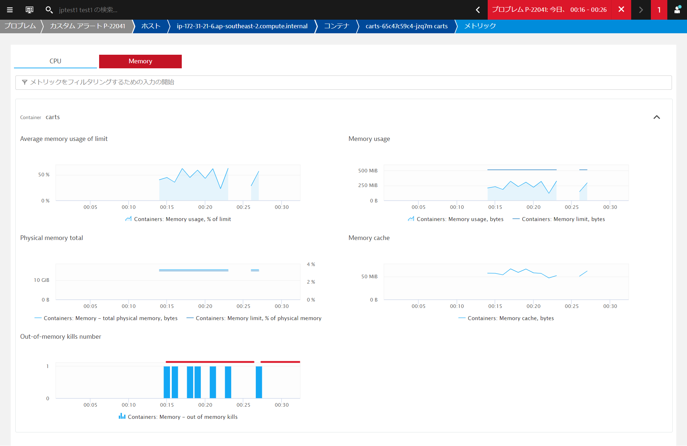

このリポジトリには、Kubernetes Hand-onで実施する内容が含まれています。本ラボでは、プラットフォームとしてmicrok8sを使用していますが、他のプラットフォームでも動作します。
Dynatrace主催のハンズオンワークショップへ参加されている方には環境が自動で払い出されます。
事前準備
- DynatraceのAccount：フリートライアルの申し込み
- Kubernetes環境
- Chrome ブラウザ
- SSH クライアント Tera Term
学習内容
- Dynatrace Operatorの導入
- 自動作成されたKubernetesのダッシュボードの確認
- Dynatrace上でのKubernetes情報の確認
- Namespace
- ワークロード
- コンテナ/ポッド
- Kubernetesにおけるラベルとアノテーションの設定、環境変数の設定
- Kubernetesのプロセスグループネーミングとサービスネーミング
- Prometheusメトリクスのインポート
この演習では、Kubernetes(Microk8s)を実行しているLinuxインスタンスにDynatrace Operatorをデプロイします。
Linuxターミナルへアクセス
Linuxインスタンスのターミナルにアクセスします。
Dynatrace Operatorのインストール
ブラウザを開き、DynatraceのGUIにアクセスしてください。
以下の手順で進めてください。
- ナビゲーションメニューから 管理 > Dynatraceハブ を開きます。
- Kubernetes を選択します。
- 右下の Kubernetesのモニター ボタンをクリックします。
Kubernetes / Openshiftのモニターページ内で、以下の手順を行います。
- 名前 を入力します 例：
k8s - Dynatrace Operator トークンおよびデータ取り込みトークンのトークンの作成をクリックして、適切なパーミッションのPaaSおよびAPIトークンを作成します。
- SSL証明書チェックのスキップを有効にします。
- ダウンロード: dynakube.yaml ボタンをクリックしてdynakube.yamlファイルをダウンロードします。

- メモ帳などでdynakube.yamlファイルを開き、dynakube.yamlファイルを全て選択し、コピーします。

- ターミナルで
vim dynakube.yamlなどを実行し、dynakube.yamlファイルを貼り付けます。

- Dynatrace UIに戻り、コピーボタンをクリックして、ターミナルに貼り付け実行します。
出力例
インストールの確認
ディプロイメントステータスの表示をクリックすると、接続されているホストの状態を確認することができます。
下の画像のように、接続されたホストが表示されているはずです。

⚠️ トラブルシューティングの手順
Kubernetes integrationの設定
Prometheus exportsのアノテーション監視およびKubernetes Events監視を有効にします。
- DynatraceのUIからインフラストラクチャ > Kubernetesを開きます。
- 先ほど作成したKubernetesクラスタをクリックします。
- 画面右上の3点ボタン「・・・」をクリックし、設定をクリックします。

- Monitor annotated Prometheus exportsを有効にします。
- Monitor eventsを有効にします。
- 変更の保存をクリックします。

Sockshopアプリケーションの再起動
様々なプロセスが自動的に検出されているのがわかりますが、Dynatraceはそれらを再起動するよう促します。これは、コードを変更せずに自動的に監視を行うために必要です。
以下のコマンドを実行して、devとproductionの2つのNamespacesに含まれるPodsを作り直します。
kubectl delete pods --all -n dev
kubectl delete pods --all -n production
DynatraceのUIから観察と探索 > ダッシュボードを開きます。もしくはお気に入りに登録されている場合はお気に入り > ダッシュボードでも開くことができます。
Kubernetes Cluster Overview
Kubernetesクラスタに関する情報を確認することができます。複数のクラスタを監視している環境ではfilter barを使うことで特定のクラスタのみにフィルタリングすることもできます。

Kubernetes Workload Overview
ネームスペースに割り当てられたKubernetesのワークロードとその使用状況の概要を確認することができます。 また、filter barを使ってダッシュボードをフィルタリングすることもできます。

Kubernetes Viewからクラスタの使用状況、クラスタのワークロード、Kubernetes関連のイベントなどを確認できます。
- 左のメニューからインフラストラクチャ > Kubernetesを選ぶかメニューのフィルタリングから、Kubernetesでフィルターすることで簡単にアクセスできます。
- 情報を表示したいクラスタ名（例：k8s）をクリックします。

Kubernetes クラスター使用率の分析
クラスターのリソースで重要なCPUコア数、合計メモリ数とそれぞれのPodsのリクエスト数、利用可能数やクラスタノード数が一目で確認できます。 クラスターレベルで最も重要な利用状況やパフォーマンスメトリクスを時系列データとして確認できます（マウスオーバーすることで最小値、最大値、中央値）。
- CPU使用率・メモリ使用率
- CPUリクエスト・メモリリクエストの合計値
- CPU制限・メモリ制限の合計値
- 利用可能なCPU・メモリリソース量
Kubernetesクラスターのワークロードの分析
リソースをどのようなワークロードが使用しているのか簡単に確認することができます。
- ワークロードの種別毎、ポッドの種別毎にクラスター内でどのように実行していたか時系列データとして確認できます。
- クラスター内の名前空間（Namespace）毎にワークロードがどれだけ稼働しているか確認できます。
Kubernetes イベントの分析
Kubernetesのデフォルトでは、kubectl get eventsは1時間しかデータが保持されません。Dynatraceにイベント情報をログとして取り組むことで、SaaS環境では35日間保存することが可能になります。 さらにイベントの種別毎に絞り込むことが可能です。
ノード単位の分析
ノードの分析ボタンをクリックすることで、ノード分析を開くことができます。ノード単位で詳細を把握することで、個々のノードの活用状況を把握することができます。ノードにまだどれだけのワークロードをデプロイできるか（つまり、利用可能なCPU・メモリの空きリソース ）についての知ることができます。

ワークロード、ポッド、名前空間の統一された分析ビュー
すべてのワークロードを表示、すべてのポッドを表示、すべての名前空間を表示をクリックすることで、クラスター内のワークロード、ポッド、名前空間を表示することができます。 例えばすべての名前空間を表示をクリックするとワークロード数、CPU・メモリのリクエストと制限を一覧形式で確認することができます。

フィルタリング基準を利用することで、確認したいリソースを絞り込むことができます。例えば、ワークロードの一覧画面でNamespace productionとすることで該当の名前空間のワークロードのみに絞り込むことができます。

ネームスペース分析ページでは、プロパティ、問題、リソースのリクエストと制限、ワークロード分析、そのネームスペースに属するワークロード、クォータ、およびイベントを確認できます。

ワークロード分析ページでは、プロパティ、リソースの使用状況、問題、脆弱性（Application Security を有効にしている場合）、それぞれのワークロードのポッド数とその状態、ポッドにトラフィックを送信しているサービス、イベントを確認できます。この情報は、ポッド内の特定の問題を調べるのではなく、全体的なパフォーマンスを分析するために有益です。

ポッド分析ページでは、プロパティ、問題、使用率とリソース、ポッドが所属するコンテナ、ホストにおけるプロセス、ポッドに関連したKubernetesのイベント情報、ログ取得の設定を行っている場合にはポッドのログを確認できます。ポッドがクラッシュしたり、CPUやメモリの飽和によって速度が低下したりする場合に、具体的な問題を解析できます。

Dynatraceは、Kubernetes/OpenShiftのラベルを取得し、自動でタグ付けすることができます。また、同様にアノテーションを取得し、プロセスグループのプロパティとして登録することができます。
ラベルとアノテーションの確認
kubectl -n production describe deployments.apps front-end.stableを実行するか ~/sockshop/manifests/sockshop-app/production/front-end.ymlを確認することでどのようなラベルとアノテーションが設定されているか確認することができます。
---
apiVersion: apps/v1
kind: Deployment
metadata:
creationTimestamp: null
labels:
app: front-end.stable
product: sockshop
release: stable
stage: prod
tier: frontend
version: "1.4"
name: front-end.stable
namespace: production
spec:
replicas: 1
selector:
matchLabels:
app: front-end.stable
product: sockshop
release: stable
stage: prod
tier: frontend
version: "1.4"
strategy:
rollingUpdate:
maxSurge: 1
maxUnavailable: 1
type: RollingUpdate
template:
metadata:
annotations:
pipeline.build: 1.4.0.7424
pipeline.project: sockshop
pipeline.stage: prod-stable
sidecar.istio.io/inject: "false"
support.channel: '#support-sockshop-frontend'
support.contact: jane.smith@sockshop.com
labels:
app.kubernetes.io/name: front-end
app.kubernetes.io/version: "1.4"
app.kubernetes.io/part-of: sockshop
app: front-end.stable
product: sockshop
release: stable
stage: prod
tier: frontend
version: "1.4"
インフラストラクチャ > テクノロジーとプロセスを開きます。フィルタリング基準からKubernetes名前空間 productionを選びます。production名前空間で動作しているプロセスグループがフィルタリングされますので、Apache Tomcatをクリックし、表示されたグループから1つ開きます。

プロパティとタグを開くとKubernetesで設定したラベルとアノテーションが登録されていることが確認できます。

サービスアカウントへのview role の割り当て
Dynatraceはサービスアカウントを使用して、Kubernetes APIを介してラベル・アノテーション情報を取得します。そのためサービスアカウントに、viewer roleが付与されている必要があります。 もし、プロパティとタグでKubernetesで設定したラベルとアノテーションが確認できない場合、以下の手順でdefaultのサービスアカウントに必要なroleを割り当てます。
- 以下のファイルを作成し、アプライします。
# dynatrace-oneagent-metadata-viewer-production.yaml
kind: Role
apiVersion: rbac.authorization.k8s.io/v1
metadata:
namespace: production
name: dynatrace-oneagent-metadata-viewer
rules:
- apiGroups: [""]
resources: ["pods"]
verbs: ["get"]
---
kind: RoleBinding
apiVersion: rbac.authorization.k8s.io/v1
metadata:
name: dynatrace-oneagent-metadata-viewer-binding
namespace: production
subjects:
- kind: ServiceAccount
name: default
apiGroup: ""
roleRef:
kind: Role
name: dynatrace-oneagent-metadata-viewer
apiGroup: ""
kubectl -n production create -f dynatrace-oneagent-metadata-viewer-production.yaml
- devに対しても同様に実行します。
# dynatrace-oneagent-metadata-viewer-dev.yaml
kind: Role
apiVersion: rbac.authorization.k8s.io/v1
metadata:
namespace: dev
name: dynatrace-oneagent-metadata-viewer
rules:
- apiGroups: [""]
resources: ["pods"]
verbs: ["get"]
---
kind: RoleBinding
apiVersion: rbac.authorization.k8s.io/v1
metadata:
name: dynatrace-oneagent-metadata-viewer-binding
namespace: dev
subjects:
- kind: ServiceAccount
name: default
apiGroup: ""
roleRef:
kind: Role
name: dynatrace-oneagent-metadata-viewer
apiGroup: ""
kubectl -n dev create -f dynatrace-oneagent-metadata-viewer-dev.yaml
以下のコマンドを実行して、devとproductionの2つのNamespacesに含まれるPodsを作り直します。
kubectl delete pods --all -n dev
kubectl delete pods --all -n production
タグの活用方法
テクノロジーとプロセスやサービスで該当のタグがついているものだけに絞り込むことができます。

また、多次元分析でもリクエストのフィルタリングに利用することができます。

タグやメタデータ情報はKubernetesのラベル・アノテーションを利用する方法以外にもDynatrace同時の環境変数を使用することで付与することができます。
事前確認
インフラストラクチャ > テクノロジーとプロセスを開きます。フィルタリング基準からKubernetesワークロード front-end.stableを選び、server.jsから始まるプロセスグループをクリックします。 プロパティとタグには[Kubernetes]から始まるタグのみ存在することを確認します。
環境変数の追加
ターミナルで、以下のコマンドを実行し、環境変数を追加します。
nano ~/sockshop/manifests/sockshop-app/production/front-end.yml
spec.containersのimage行の下に追加します。インデントが正しく行われているか、エラープロンプトが表示されていないかを確認してください。
env:
- name: DT_TAGS
value: "product=sockshop"
- name: DT_CUSTOM_PROP
value: "SERVICE_TYPE=FRONTEND"

修正したファイルをCtrl-X、Y、Enterで保存し、以下のコマンドを実行して変更を再適用します。
kubectl apply -f ~/sockshop/manifests/sockshop-app/production/front-end.yml
確認
作業が完了したら、Dynatraceで変更を検証することができます。 インフラストラクチャ > テクノロジーとプロセスを開きます。フィルタリング基準からKubernetesワークロード front-end.stableを選び、server.jsから始まるプロセスグループをクリックします。
先ほど追加した環境変数がタグおよびメタデータとして反映されていることが確認できます。
追加した内容はproduction名前空間のfront-endワークロードのみなので、dev名前空間のfront-endワークロードや、他のワークロードには追加されていないことを確認してみましょう。 ヒント：テクノロジーとプロセス画面でフィルタリングを利用すると簡単に絞り込むことができます。
プロセスグループやサービスの命名規則を設定することにより、プロセスグループ名やサービス名とKubernetes環境との関係性がわかりやすくなります。
プロセスグループの命名規則
管理 > 設定を開き、Processes and containers > Process group namingへ移動し、Add a new ruleをクリックします。
Rule nameにルールの名前を入力します。（例: Kubernetes Project.Namespace.Container）
Process group name foratに命名規則を入力します。 ここでは以下のように入力してください。
k8s-{ProcessGroup:Kubernetes:pipeline.project}.{ProcessGroup:KubernetesNamespace}.{ProcessGroup:KubernetesContainerName}
Conditionsは, Kubernetes 名前空間とexistsを選択します。
Previewをクリックし、マッチしているエントリーを確認します。

Create Ruleと変更の保存をクリックします。
プロセスグループの確認
インフラストラクチャ > テクノロジーとプロセスを開きます。フィルタリング基準からKubernetes 名前空間 productionを選び、Apache Tomcatをクリックします。

プロセスグループ名が変更されていることが確認できます（設定が反映されない場合はブラウザを更新してみてください）。
サービス名の命名規則
アプリケーションとマイクロサービス > サービスを開き、現在のサービス名を確認します。

管理 > 設定を開き、Server-side service monitoring > Service naming rulesへ移動し、Add a new ruleをクリックします。

Rule nameにルールの名前を入力します。（例: Kubernetes.Namespace）
Service name foratに命名規則を入力します。 ここでは以下のように入力してください。
{Service:DetectedName}.{ProcessGroup:KubernetesNamespace}
Conditionsは, Kubernetes 名前空間とexistsを選択します。
Previewをクリックし、マッチしているエントリーを確認します。

Create Ruleと変更の保存をクリックします。
サービスの確認
アプリケーションとマイクロサービス > サービスを開き、名前の後ろに名前空間がついていることを確認します（設定が反映されない場合はブラウザを更新してみてください）。
ワークロードのリソース使用量の管理
Kubernetesプラットフォームは、多くの仮想化および抽象化レイヤーの上に構築されていますが、ワークロードが使用しているリソースを意識する必要があります。
これは、Kubernetesが通常、共有インフラ上で動作するプラットフォームとして設計されているため、使用するリソースの量が、同じクラスタ上で動作する他のアプリケーションに影響を与える可能性があるためです。
- Kubernetesプラットフォームの管理者は、プロジェクト（名前空間）が遵守する必要のあるリソースクォータを設定します。
- アプリケーションチームは、指定されたリソースを異なるマイクロサービスに割り当てる責任があります。
アラートのためのカスタムイベントの設定
ここではOutOfMemory Killの発生を検知し、アラートを上げるための設定を行います。
管理 > 設定を開き、Anomaly detection > Custom events for alertingへ移動し、Create custom event for alertingをクリックします。
以下の通りに設定をします。（注：すぐにアラートが上がるように閾値はあえて低めに設定してあります）
- カテゴリ:
Containers - メトリック:
Containers: Memory - out of memory kills（outofと入力すると絞り込みが可能です） - Monitoring strategy
- Static threshold
- Alert anomalies with a static threshold of
0 - Raise an alert if the metric is
abovethe threshold for1the threshold for3minute period.
- タイトル:
Container OOMKills - 重要度:
Custom alert - Message:
OOMKill for {dims:dt.entity.container_group_instance} have been detected.

新しいビルドのデプロイ
以下のコマンドを実行して、このデプロイメントを適用します。
cd ~/sockshop
kubectl apply -f manifests/sockshop-app/newbuilds/newbuild-quota.yml
数分後にDynatraceはプロブレムを検知します。
観察と探索 > プロブレムを開きましょう。Container OOMKillsが発生していることが確認できます。
新しいcartsポッドのコンテナがOOMKilledされました。これは、メモリ使用量が設定された上限を超えたことを意味します。
コンテナーグループインスタンスをクリックすると、コンテナービューに移動します。 コンテナビューでは、リソースの消費状況を把握するために必要なすべてのメトリクスとデータポイントが表示されます。

これは新しいビルドと関係があり、次のどちらかが問題の原因となります。
- コンテナのメモリ制限が間違って設定されていた
- 新しいビルドにメモリリークがあり、時間の経過とともに制限値以上のメモリを消費している。
- このような場合、いくらメモリ制限を増やしても、結局は制限を超えてしまいます。これでは時間稼ぎをしているだけで、コード自体を修正する必要があります。
- さまざまな条件でテストを行い、Javaのメモリメトリクスをプロセスビューから監視します。Dynatraceは、必要となるすべてのメトリクスを提供しています。

開発チームはすぐにこの問題を発見し、修正を行いました。この問題は、設定上の問題に関連しており、コンテナのメモリ制限が誤って設定されていました。
ターミナルでは、修正を適用します。
kubectl apply -f ~/sockshop/manifests/sockshop-app/newbuilds/newbuild-quota-fix.yml
しばらくするとDynatraceでも問題はクローズされます。

教訓として
- Kubernetesにおけるリソース管理は非常に重要です。
- インフラやクラウドサービスでは、リソースは常に制限されており、コストがかかります。
- ワークロードのリソース消費量を把握することは、様々なサービスに対してどのような要求や制限を設定すべきかを把握するための鍵となります。
k8sのインフラ運用チームは、常に必要な分だけのリソースを提供してくれます。彼らの責任は、プラットフォームを利用するすべての人のために、プラットフォームが健全に保たれるようにすることです。そのため、より多くのリソースが必要な場合には、プラットフォームチームと交渉しなければなりません。どのような交渉でも、できるだけ多くの情報を持ってテーブルにつくことが大切です。
そのためには、Dynatraceが頼りになります。
アプリケーションには、Nginx、Redis、RabbitMQ、MySQL、MongoDBなどのサードパーティのテクノロジーが使用されていることが多く、これらについては、メトリクスの観点からさらなる洞察が必要となります。
Dynatraceでは、Prometheusと同じ形式のメトリクスを取り込むことができ、マイクロサービスやポッドのより大きな文脈の中にそれらを取り込み、これらのメトリクスの自動適応ベースライン化による強化されたアラートを可能にします。
さらに良いことに、Dynatraceはスクレイピングを実行してくれるので、Prometheusサーバーは必要ありません。

Prometheusエクスポーターポッドのアノテーション
ターミナルに戻り、次のコマンドを実行して、ポッドにPrometheus scrapingのためのアノテーションを付与します。
このコマンドは、Production namespace内のポッドにアノテートを付与します。
kubectl annotate po -n production --all --overwrite metrics.dynatrace.com/scrape=true
kubectl annotate po -n production --all --overwrite metrics.dynatrace.com/port=8080
メトリクスの探索
1～2分ほど待ってから、観察と探索 > メトリックを開きます。Filtered by:テキストボックスにprocess_と入力し、"Enter "キーを押します。
複数のメトリクスが表示されます。これらはPrometheusのメトリックから収集したものです。何も表示されない場合は、もう少し待ってから、画面を更新して再度試してみてください。

いずれかの項目の詳細を開くと、収集されたメトリックのDimensionsなどを確認することができます。Dynatraceは、Kubernetesのワークロード、ネームスペース、ノードなどを 自動的に関連付け、これをAIエンジンに送り込んでいます。

PrometheusのメトリクスをDynatraceで利用できるようになりました。サードパーティ製ではありますが、これらのメトリクスもDynatraceのメトリクスとして扱われます。 また、これらのメトリクスを簡単にチャート化したり、ダッシュボードに貼り付けることができます。
メトリクスに基づくカスタムアラートを設定する方法
メトリクスに基づいてアラートを作成することもできます。収集しているメトリクスに関する異常があった場合に通知されるよう設定することが可能です。
Metric events for alertingが参考になります。
セッション終了後、お時間のある方はぜひお試しください。
Dynatrace Monitoring as Code (Monaco)を使用して、Dynatraceの設定をコートとして管理することが可能です。
これには以下のようなユースケースがあります。
- 複数の環境で再利用できるように、構成をテンプレート化する機能を持つこと
- コンフィグレーション間の相互依存性は、一意の識別子を追跡することなく処理する必要があります。
- 同じコンフィグレーションを何百ものDynatrace環境に簡単に適用・更新できる機能を導入し、特定の環境にロールアウトすることができます。
- アプリケーション固有の構成をある環境から別の環境へと促進するための簡単な方法を特定し、開発からハードニング、本番までのデプロイメントを追跡します。
- プルリクエスト、マージ、承認など、gitベースのワークフローのすべてのメカニズムとベストプラクティスをサポートする。
- コンフィグレーションは、開発からハードニング、本番へのデプロイメント後、1つの環境から別の環境へと簡単に昇格できなければなりません。
monacoのインストール
monacoはGithubからダウンロードすることができます。
cd sockshop/
curl -L https://github.com/dynatrace-oss/dynatrace-monitoring-as-code/releases/download/v1.7.0/monaco-linux-amd64 -o monaco-cli
chmod +x monaco-cli
monaco-cli helpと入力することでコマンドの詳細を確認することができます。
DT_TENANTとDT_API_TOKENとDT_DASHBOARD_OWNERの変数を設定します。 これらは、ラボの登録メール内に記載されています。
export DT_TENANT= https://mou612.managed-sprint.dynalabs.io/e/<ENV>
export DT_API_TOKEN=dt0c01.IH6********************************************
export DT_DASHBOARD_OWNER=<your email address>
コマンドの実行後に、以下のコマンドを実行してDynatraceの設定を行います。本演習ではダッシュボードの作成のみ実施するため不要な設定は削除しておきます。
cp -r monaco/sockshop/dashboard/ dashboard
rm -rf monaco/sockshop/*
cp -r dashboard/ ~/sockshop/monaco/sockshop/
export SKIP_PROMETHEUS=false
./monaco-cli -e=monaco/sockshop-environment.yaml -p=sockshop monaco
Deployment finished without errorsが出力されていれば成功です。
ダッシュボードの確認
お気に入り > ダッシュボードもしくは観察と探索 > ダッシュボードからダッシュボードを開きます。 Environment Overview DashboardとPrometheus - Environment Overview Dashboardの2つのダッシュボードが作られていることを確認します。
Prometheus - Environment Overview DashboardではPrometheusが収集したメトリクスの概要を確認することができます。

このラボを楽しんでいただき、お役に立てれば幸いです。ご意見、ご感想をお待ちしております。